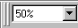
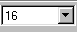
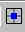

|
|
|---|
Zoom Factor Allows you to adjust the zoom factor.
Grid Factor Allows you to adjust the grid size.
Top Activates or assigns a this view to a workspace element.
Side Activates or assigns a this view to a workspace element.
Front Activates or assigns a this view to a workspace element.
Center Views This will center the selected item in all workspace elements.
3D View This toggles the 3D view workspace element on and off.